Recitation 4
Scatter plot matrix & correlation plots · Violin plots · Lollipop, slope & dumbbell charts · Time series · Gestalt principles in data visualization
How to use this page
Each question below is interactive. Click an option or type an answer, then press Check (or Enter). Show answer reveals the solution and the explanation, and Reset clears the question so you can try again.
Progress
Part A — Many numerical variables
- Scatter plot matrix: when a data set has many continuous variables, we draw the scatter plots of all pairwise combinations of the variables and arrange them in a matrix. Row \(i\), column \(j\) shows variable \(i\) against variable \(j\).
- Correlation plot: shows the correlation coefficient \(r\) for every pair of variables, often with coloured circles (colour = sign, size = strength).
- Drawback of a correlation plot: it does not give any information about the nonlinearity of a relationship; it only measures the linear relationship. If there is a nonlinear relationship, we can apply a transformation to the variables, such as \(\log(x)\), to satisfy linearity.
- Variable types in the data: a variable stored as numbers is not always numerical. Codes such as 0/1 for “automatic/manual” or the number of cylinders (4, 6, 8) are categories, so they should be converted to factors before plotting.
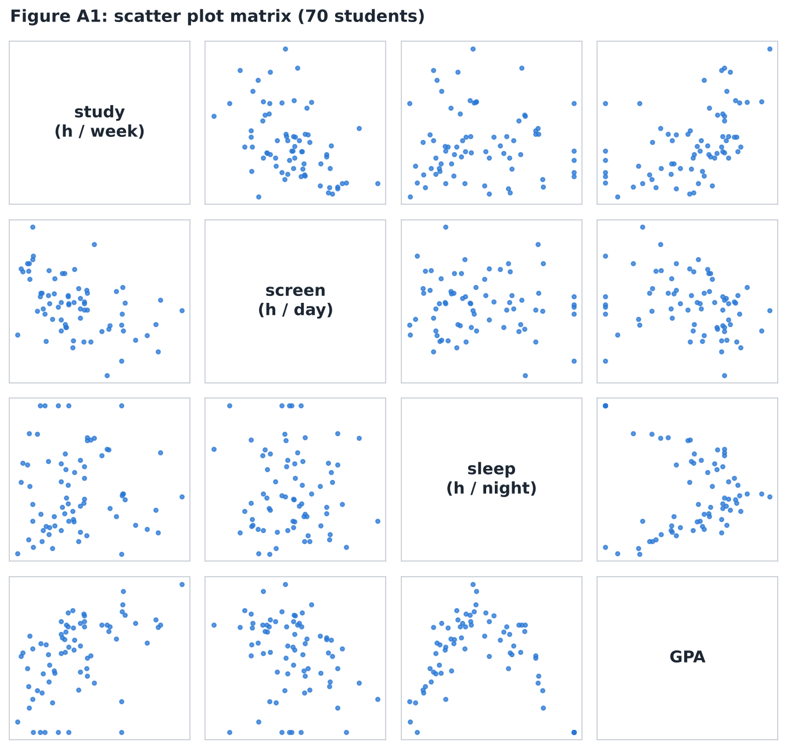
Use Figure A1 (70 students; variables: study hours per week, screen time per day, sleep per night and GPA).
A scatter plot matrix of 4 variables contains different pairs of variables (each pair appears twice, above and below the diagonal).
The panel in row “GPA”, column “study” shows a relationship.
The panel in row “screen”, column “study” shows a relationship.
The pair with an upside-down U (curved) shape is sleep and .
- With 4 variables there are \(\binom{4}{2} = 6\) pairs: study–screen, study–sleep, study–GPA, screen–sleep, screen–GPA, sleep–GPA. The panels above the diagonal are the mirror images of those below it (axes swapped).
- Students who study more tend to have a higher GPA and less screen time.
- Sleep–GPA: GPA is highest around 7 hours of sleep and lower for both very short and very long sleep: a nonlinear relationship.
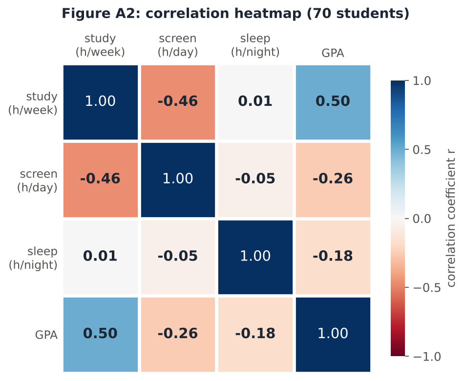
Use the correlation plot Figure A2, made from the same data.
The strongest positive correlation is between study and , with \(r =\) .
The strongest negative correlation is between study and , with \(r =\) .
The correlation between sleep and GPA is only \(r =\) .
Darker tiles mean stronger correlations: study–GPA (\(r = 0.50\), blue = positive) and study–screen (\(r = -0.46\), red = negative). Ignore the dark diagonal: it only shows that each variable is perfectly correlated with itself (\(r = 1\)). Sleep–GPA has only a pale tile (\(r = -0.18\)), even though Figure A1 shows a clear pattern for this pair (see the next question).
Figure A2 says sleep and GPA are only weakly correlated (\(r = -0.18\)), but Figure A1 shows a clear upside-down U. How do you explain this?
- The correlation plot is wrong; \(r\) was computed incorrectly.
- Sleep and GPA are not related at all.
- The relationship is strong but nonlinear; a correlation plot only measures the linear relationship, so it cannot show this pattern.
- The scatter plot matrix exaggerates relationships, so we should trust only the correlation plot.
This is the drawback of correlation plots stated in the lecture: they give no information about the nonlinearity of a relationship. Always look at the scatter plot matrix together with the correlation plot. For a nonlinear relationship, a transformation of the variables (such as \(\log(x)\)) can sometimes make it linear.
A data set on 40 phones was read into R. Its structure looks like this:
'data.frame': 40 obs. of 6 variables:
$ price : num 18999 24500 15999 ...
$ battery : num 4500 5000 4000 ...
$ weight : num 187 201 174 ...
$ cameras : num 2 3 2 ...
$ fiveG : num 1 1 0 ... (0 = no, 1 = yes)
$ brand : num 1 3 2 ... (1 = A, 2 = B, 3 = C)Which variables should be treated as numerical and which should be converted to factors?
- price :: Quantitative
- battery (mAh) :: Quantitative
- weight (g) :: Quantitative
- cameras (number of rear cameras: 2, 3 or 4) :: Qualitative (factor)
- fiveG :: Qualitative (factor)
- brand :: Qualitative (factor)
fiveGandbrandare codes for categories: their numbers have no numerical meaning (brand 3 is not “three times” brand 1).camerastakes only a few values that define groups (2, 3 or 4 cameras), so it is treated as a factor.- Once these are factors, they can be used for colour, shape or separate panels instead of appearing in a scatter plot matrix as if they were continuous.
Part B — Box plots, violin plots and split violin plots
A box plot uses only five numbers, so it cannot show whether a distribution is bimodal or multimodal. A violin plot adds the density on each side. Adding the points (strip plot) gives the complete view, and a split violin compares two groups inside one violin.
![Four annotated plots of the same exam scores. 1: a box plot with labels for minimum, Q1, median, Q3 and maximum, and a note that it hides the two groups. 2: a violin plot with labels: kernel density mirrored on each side, wide means many students, narrow means few students, white dot is the median, thick bar is the interquartile range, thin line is the 95% confidence interval. 3: the violin with every student as a dot, showing groups around 46 and 76 and almost nobody near the median. 4: split violins for two courses, left half female students, right half male students, with a median line in each half.](recitation4/r4-violin-guide.png)
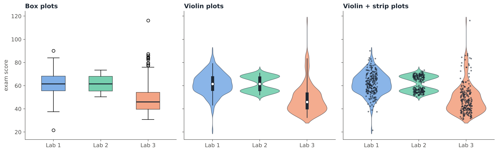
Labs 1 and 2 have almost the same box: \(Q_1 \approx 55\), median \(\approx 61.5\), \(Q_3 \approx 68\). What do the violin plots reveal?
- Lab 2 has a higher median than Lab 1.
- Lab 2 is bimodal: its scores form two groups, around 55 and around 68, with few students near the median.
- Lab 1 is bimodal.
- Lab 3 is symmetric.
The box plot uses only five numbers, so it hides the two peaks of Lab 2. The violin’s width shows the density: Lab 2 has two bulges and a narrow “waist” exactly at the median. Lab 1 is unimodal and roughly symmetric; Lab 3 is right-skewed (long upper tail). The third panel adds the individual points (a strip plot), which confirms the two groups in Lab 2.
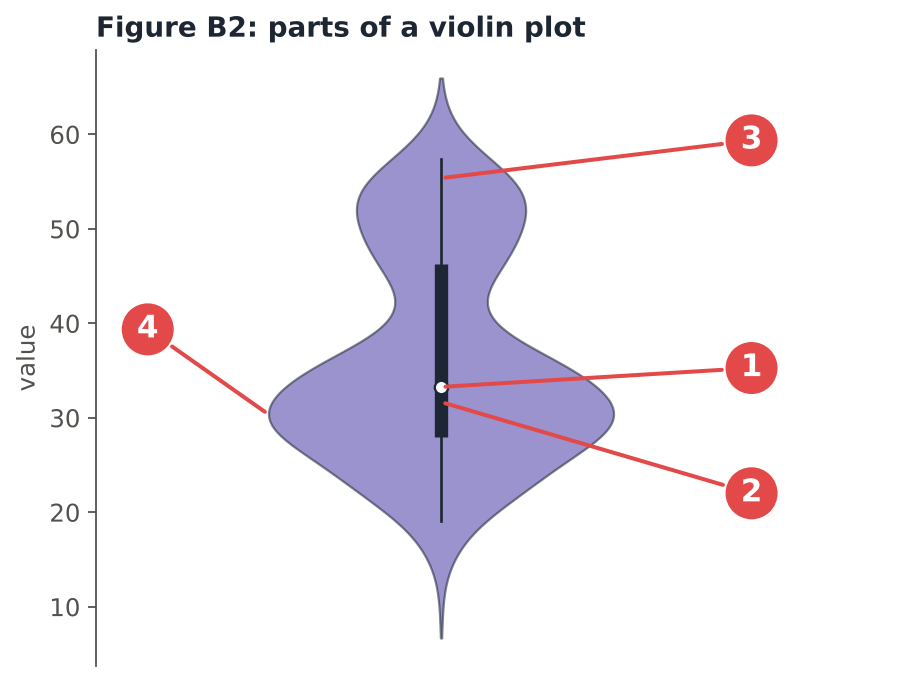
What does each numbered part of the violin plot show?
- 1 (white dot) :: Median
- 2 (thick black bar) :: Interquartile range
- 3 (thin black line) :: 95% confidence interval
- 4 (width of the violin) :: Density (how frequent the values are)
The inside of the violin is a small box plot: the white dot is the median and the thick bar spans the interquartile range (\(Q_1\) to \(Q_3\)); the thin line shows the 95% confidence interval. The outline is a kernel density plot, mirrored on both sides: the wider the violin at a value, the more observations there are near that value. This violin is wide around 30 and again around 52: it is bimodal.
Which statements about box plots and violin plots are true? Select all that apply.
- A violin plot combines a box plot with a kernel density plot drawn on each side.
- Two groups can have nearly identical box plots but very different violin plots.
- A box plot clearly shows whether a distribution is bimodal.
- Violin plots display more information than box plots, but they can be noisier.
- In a violin plot, the thick black bar shows the range from the minimum to the maximum.
- c is false: with box plots you can’t see if the distribution is bimodal or multimodal.
- e is false: the thick bar is the interquartile range; the thin line shows the 95% confidence interval.
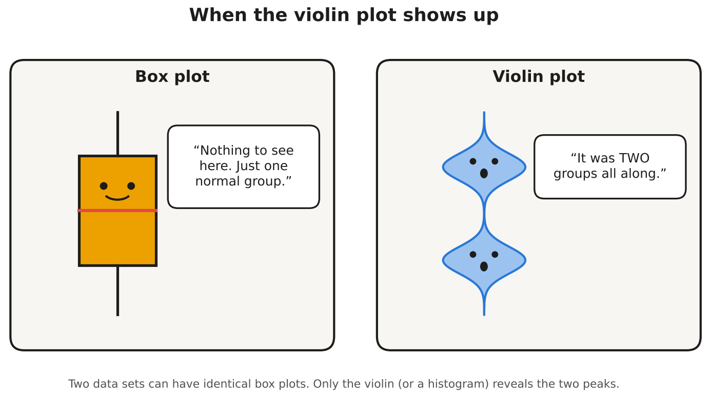
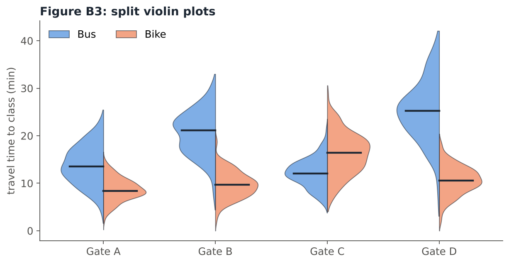
Figure B3 shows travel time to class for students who come by bus (left, blue halves) and by bike (right, orange halves), at four campus gates.
The only gate where bike users are slower than bus users is Gate .
The largest difference between the bus and bike medians is at Gate : about 25 minutes for bus users vs about minutes for bike users.
The group with the widest spread of travel times is the users at Gate D.
- In a split violin each category (gate) has one violin whose two halves are the two groups, so the groups can be compared directly at each gate.
- Gate C: bike median ≈ 16 min vs bus median ≈ 12 min, the only reversal.
- Gate D: bus ≈ 25 min vs bike ≈ 11 min. The blue half at Gate D is also the tallest (from about 3 to 42 minutes): bus travel times there vary the most.
Part C — Lollipop, slope and dumbbell charts
- Lollipop chart: conveys the same information as a bar chart. By reducing the thick bars into thin lines with a dot, it reduces clutter and lays more emphasis on the value.
- Slope chart: a great tool to visualize change in value and ranking between categories (for example from one year to the next). Each category is a line between the two time points.
- Dumbbell plot: shows relative positions (like growth and decline) between two points in time, or compares the distance between two categories. To display the dumbbells in the desired order, arrange the levels of the \(y\) variable (e.g. by the size of the change).
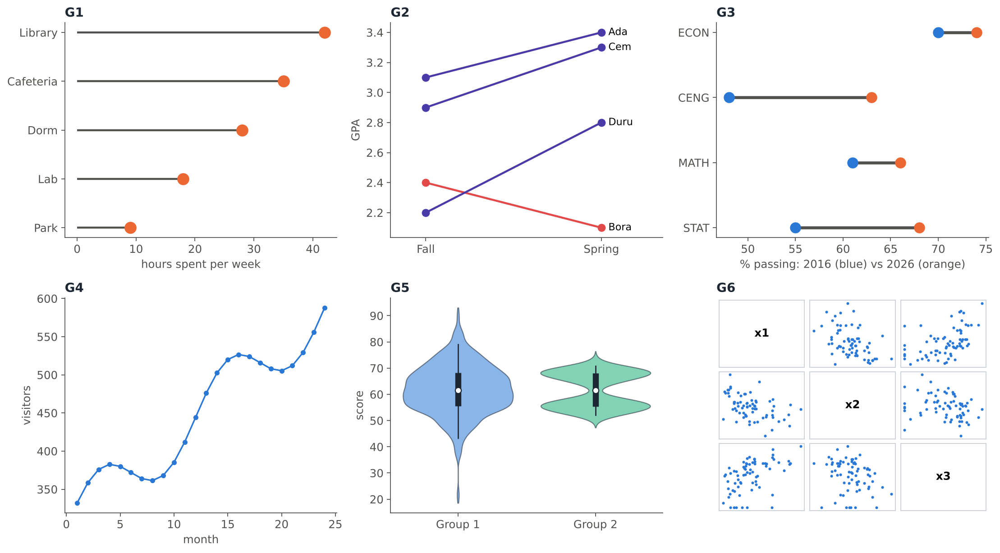
Name each graph in the gallery above.
- G1 :: Lollipop chart
- G2 :: Slope chart
- G3 :: Dumbbell plot
- G4 :: Line chart
- G5 :: Violin plot
- G6 :: Scatter plot matrix
- G1: thin lines with a dot at the value: a bar chart with less ink.
- G2: each student’s GPA in two semesters joined by a line; crossing lines show changes in ranking.
- G3: two dots per department (2016 and 2026) joined by a bar that shows the change.
- G4: a variable plotted over time with the points connected in time order.
- G5: box plot + mirrored density on each side.
- G6: all pairwise scatter plots of three variables, arranged in a matrix.
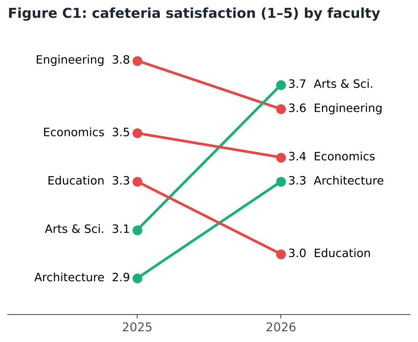
Use the slope chart Figure C1 (cafeteria satisfaction, scale 1–5).
The faculty with the largest increase is , by points.
The number of faculties whose score decreased is .
Ranked first in 2025: . Ranked first in 2026: .
Education fell from rank 3 to rank .
- Changes: Engineering 3.8 → 3.6 (−0.2), Arts & Sci. 3.1 → 3.7 (+0.6), Economics 3.5 → 3.4 (−0.1), Architecture 2.9 → 3.3 (+0.4), Education 3.3 → 3.0 (−0.3). Three red (falling) lines.
- Ranks in 2025: Engineering, Economics, Education, Arts & Sci., Architecture. In 2026: Arts & Sci., Engineering, Economics, Architecture, Education.
- The slope chart shows both the change in value (the slope) and the change in ranking (lines crossing).
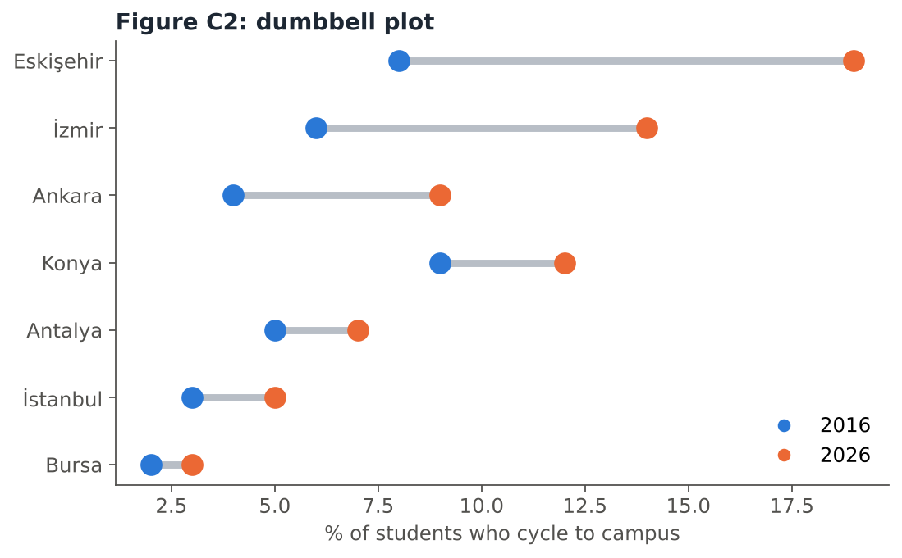
Use the dumbbell plot Figure C2 (% of students who cycle to campus).
The city with the largest increase from 2016 to 2026 is , from 8% to %.
The city with the smallest increase is .
In 2016 the highest percentage was in .
The cities are sorted by the between the two years.
Each dumbbell joins the 2016 value (blue) and the 2026 value (orange); the grey bar’s length is the change. Eskişehir: 8 → 19 (+11), Bursa: 2 → 3 (+1). In 2016 Konya had the highest value (9%), but by 2026 two cities (Eskişehir and İzmir) had passed it.
The lecture’s tip: to display the dumbbells in the desired order, arrange the levels of the \(y\) variable. Sorting by the size of the change makes the comparison immediate.
Match each graph with the job it does best.
- Lollipop chart :: Compare values across categories like a bar chart, with less clutter
- Slope chart :: Show the change in value and in ranking between two time points
- Dumbbell plot :: Show growth or decline between two points in time for each category
- Violin plot :: Show the shape of a distribution, including several peaks
- Scatter plot matrix :: Look at all pairwise relationships among many continuous variables
- Line chart :: Show how a variable changes over successive points in time
Choosing the graph starts with the question: compare categories (lollipop), show change (slope, dumbbell, line), show relationships (scatter plot matrix) or show distributions (violin).
Part D — Time-series data and line charts
- Data can be classified by the time they are collected: cross-sectional data are all collected once in time; time-series data are collected at successive points in time.
- Time-series data are often depicted on a line chart: a plot of the variable over time, with the points connected in time order.
Are these time-series or cross-sectional data?
- Turkey’s monthly inflation rate from 2015 to 2026 :: Time series
- The daily number of visitors to the METU library during October :: Time series
- The rents of 160 flats near METU in September 2026 :: Cross-sectional
- Your weight, measured every Monday for a year :: Time series
- The GPAs of all STAT 112 students this semester :: Cross-sectional
- The heights of the players of the national basketball team in 2026 :: Cross-sectional
Time series: one unit (a country, a library, a person) observed at successive points in time; the order matters. Cross-sectional: many units measured once, at the same point in time.
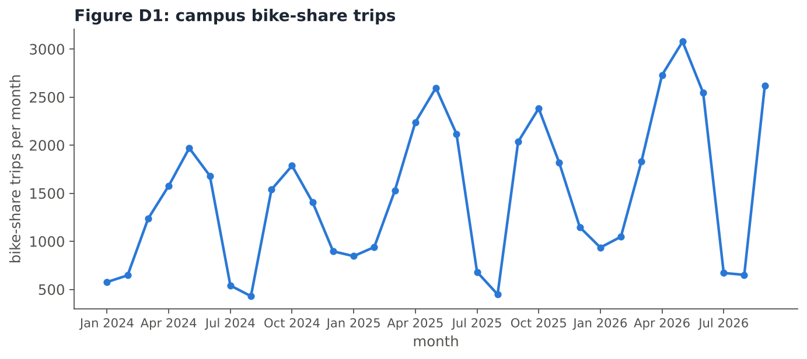
Use the line chart Figure D1 (monthly bike-share trips on campus). Which statements are supported? Select all that apply.
- There is an upward trend: the peaks get higher from 2024 to 2026.
- Every year, the number of trips drops sharply in July and August.
- Trips are also low in the winter months (December–February).
- The number of trips is the same every month.
- The highest number of trips in the period is in spring 2026.
- A histogram of the 33 monthly values would show the same information as the line chart.
- a, e: the spring peaks rise from about 2,000 (2024) to about 2,600 (2025) and 3,100 (May 2026).
- b, c: a repeating pattern: low during the summer break and in winter, high in spring and autumn (semesters).
- f is false: a histogram ignores the order of the months, so the trend and the yearly pattern would disappear. For time-series data, use a line chart.
Part E — Gestalt principles
- Gestalt is a German word meaning “whole”, “shape” or “form”. The Gestalt principle is a psychological term developed in the 1920s: people tend to organize visual elements into groups or “unified wholes”. The whole is greater than its parts.
- Gestalt laws (Wertheimer, Köhler and Koffka) explain how we group smaller objects to form larger ones (perceptual organization):
- Closure: the brain fills in gaps or missing lines to see a complete shape.
- Proximity: objects that are close to one another are seen as one group.
- Similarity: objects that share visual traits (size, colour, texture, dimension, shape, orientation) are seen as a group.
- Prägnanz (simplicity): we reduce complex shapes to the simplest form possible.
- Continuity: the eye follows paths, lines and curves rather than abrupt changes.
- Common region: objects inside the same bounded region are seen as one group.
- Figure–ground: the mind separates the figure (focal object) from the ground (background). Usually the larger area is seen as the ground and the smaller as the figure; lighter and darker colours influence this.
- Focal point: the eye is captured by the element that is different from its surroundings.
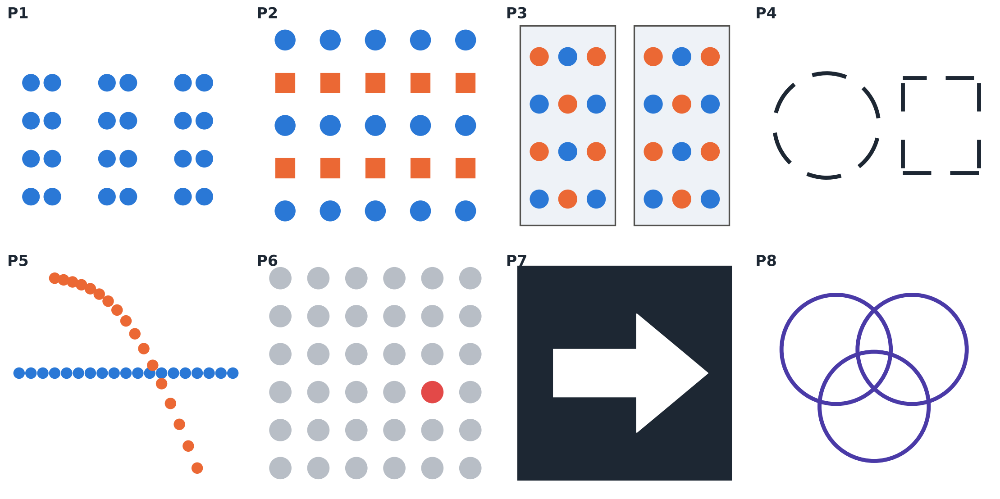
Which Gestalt principle does each picture illustrate best?
- P1 :: Proximity
- P2 :: Similarity
- P3 :: Common region
- P4 :: Closure
- P5 :: Continuity
- P6 :: Focal point
- P7 :: Figure-ground
- P8 :: Prägnanz
- P1: 24 identical dots, but the spacing makes us see three groups.
- P2: we see rows of circles and rows of squares (same shape and colour belong together).
- P3: the colours alternate, yet we group the dots by the box they are in; common region overrides colour.
- P4: a circle and a square with gaps: the brain fills in the missing parts.
- P5: we see one straight line and one curve crossing, not two broken pieces; the eye follows the smoothest path.
- P6: the single red dot catches the eye immediately.
- P7: the white arrow is the figure and the black area is the ground.
- P8: we see three overlapping circles, the simplest interpretation, rather than many complicated curved pieces.
In a figure–ground picture, our brain generally interprets the larger area as the ground (background) and the smaller area as the figure, although light and dark colours can change what is seen as the figure.
True. This is how the lecture describes the figure–ground principle. Because it uses negative space, it is similar to the closure principle, and some pictures can be read in two ways, depending on which area you see as the figure.
Part F — Gestalt principles in data visualization
- Data visualization is “how to tell stories with data”, helping the audience understand what is sometimes difficult to see. All visualizations at the end are exploratory.
- The Gestalt principles help us decide which elements of a visual are informative and which are noise; they guide decisions when building a graph or a dashboard, and help the reader organize and interpret it quickly.
- Workflow for presentation visuals: (1) define the purpose of the visual and its intended audience; (2) create a story to give your message; (3) consider aesthetic / design principles.
- In graphs:
- Simplicity: apply a sort order.
- Enclosure: shade an area to separate it, e.g. forecast vs actual.
- Closure: remove chart borders and background shading.
- Continuity: remove unnecessary axis lines; aligned bars are still seen as aligned.
- Connection: connect the dots with lines to show order.
- Focus point: highlight the important points with colour.
- In dashboards:
- Enclosure: containers group related elements.
- Similarity: colour links points that belong together.
- Proximity: keep text close to its chart and place small multiples together.
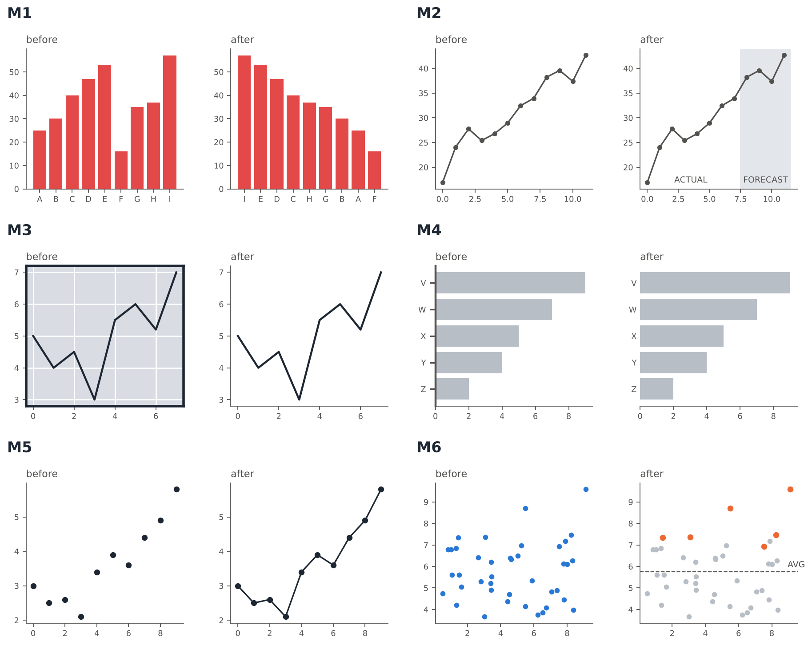
Each pair above shows a chart before and after a makeover. Which principle does each makeover use?
- M1 :: Simplicity
- M2 :: Enclosure
- M3 :: Closure
- M4 :: Continuity
- M5 :: Connection
- M6 :: Focus point
- M1, simplicity: the bars are sorted, so the order is easy to read.
- M2, enclosure: the shaded area separates the forecast from the actual data.
- M3, closure: the border and background shading are removed; the graph still looks complete, and the data stand out more.
- M4, continuity: the \(y\)-axis line is removed; the bars still look aligned because of the consistent white space.
- M5, connection: lines connect the dots and help the eye see the order.
- M6, focus point: the important points are coloured, the rest are grey, and an average line gives context.
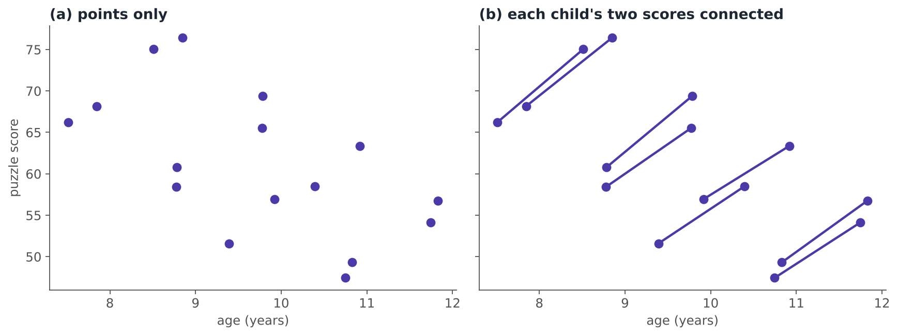
Eight children each solved a puzzle test twice, one year apart. Panel (a) shows only the points; panel (b) connects each child’s two scores. What does the connection reveal?
- Both panels show that children get worse at puzzles as they grow older.
- Connecting the points changes the data, so panel (b) cannot be trusted.
- Panel (a) suggests that older children score lower, but panel (b) shows that every child improved over the year; the lower scores belong to children who started lower.
- Panel (b) shows that age and puzzle score are not related.
Without connections, the cloud slopes downward (\(r \approx -0.59\)): the older children in this sample happen to have lower scores. Connecting each child’s two measurements uses the connection principle: now we see the change within each child (every line goes up) separately from the differences between children (their starting levels).
You are designing a dashboard. Which choices use the Gestalt principles correctly? Select all that apply.
- Put a short explanation text right next to the chart it describes (proximity).
- Use the same colour for the same region in every chart of the dashboard (similarity).
- Spread five related small charts randomly around the page so that each one gets attention.
- Draw a light container around the filters and charts that belong to the same topic (enclosure / common region).
- Keep the default thick border and grey background on every chart so that each chart looks important.
- c is wrong: related small multiples should be placed together (proximity + similarity); if they are spread out randomly, the grouping is less obvious.
- e is wrong: by the closure principle, borders and background shading can be removed; the graph still looks complete and the data stand out more.
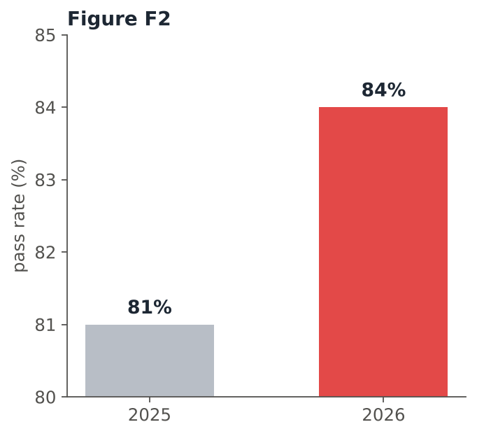
Figure F2 shows the pass rate of a course in 2025 and 2026. Its \(y\)-axis starts at 80, not at 0.
The 2025 bar is 81 − 80 = 1 unit tall and the 2026 bar is units tall, so the 2026 bar looks times as tall.
In reality, the pass rate increased by only percentage points.
Because the axis starts at 80, the bars show only the part above 80: 1 vs 4 units, so the 2026 bar looks four times as tall. In fact \(84/81 \approx 1.04\). Starting a bar chart with a non-zero baseline is a classic way to make small differences look huge (the lecture’s “Bad examples”). Bars should start at zero:
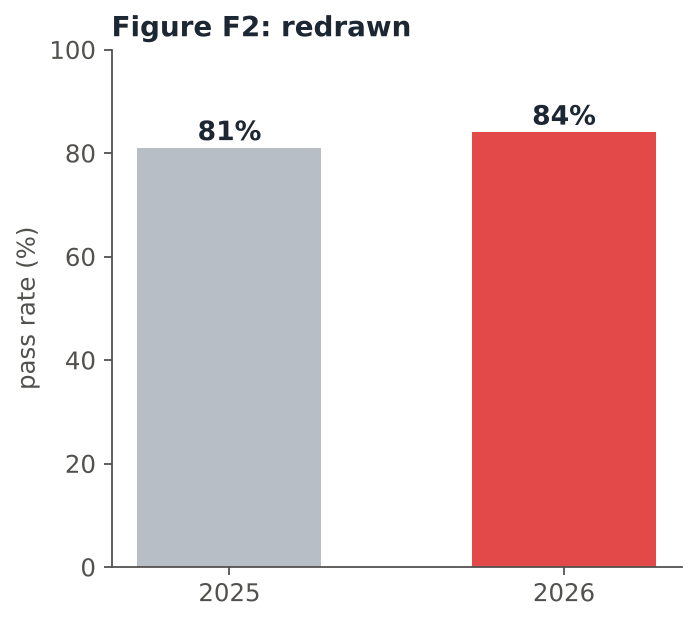
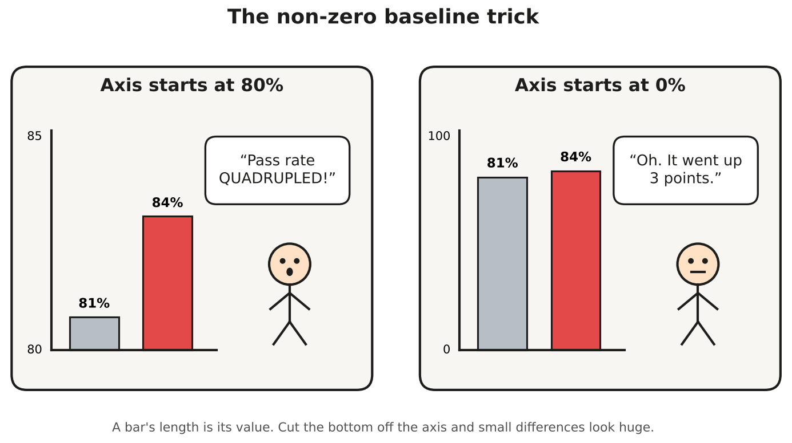
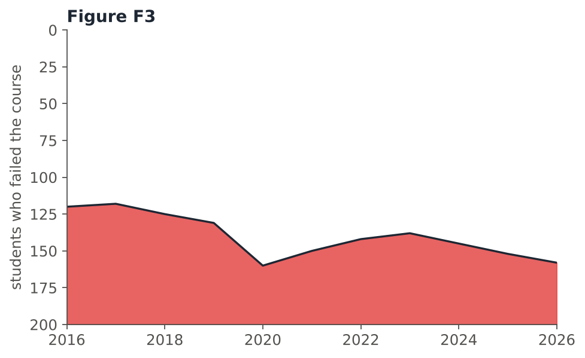
Figure F3 shows the number of students who failed a course each year. Most readers who look at it quickly conclude that the number of failures decreased, especially in 2020. Why?
- Because failures really decreased.
- The \(y\)-axis is upside down (0 at the top), and the filled red area looks like an ordinary chart, so rising values look like falling ones.
- Because the chart has no title.
- Because the chart uses too many colours.
In fact the number of failures increased (from about 120 to about 160), with a peak in 2020. Our perception organizes the red region as the figure and reads its upper edge as “the values”, so the inverted orientation leads to misperception. This is the lecture’s bad example: the designer did not mean to mislead, but the way we perceive shapes produced the wrong message. Redrawn in the usual orientation:
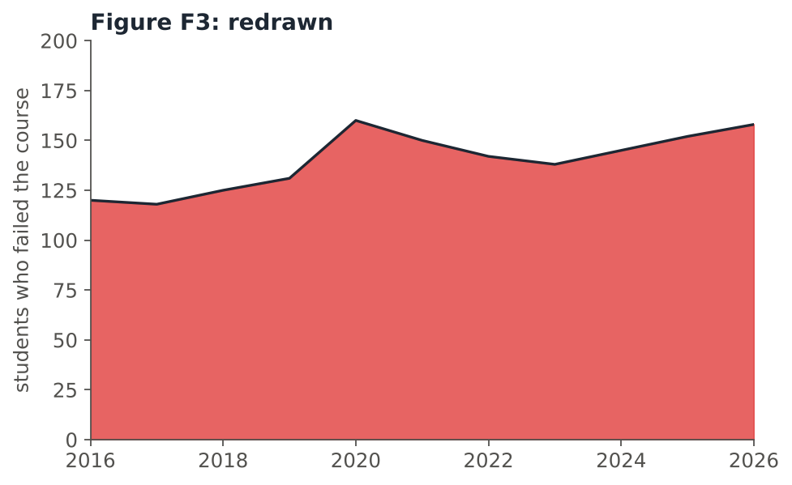
Part G — YOUR TURN
Choose the most appropriate graph for each task.
- Compare the distribution of exam scores in 4 sections and check whether any section has two peaks :: Violin plot
- Compare the travel times of male and female students at each of 5 dormitories in one graph :: Split violin plot
- Show the number of books borrowed from the library each week during one semester :: Line chart
- Show 12 students’ rankings in the midterm and in the final, including who moved up or down :: Slope chart
- Examine all pairwise relationships among 6 continuous variables of a data set :: Scatter plot matrix
- Show the average score of 15 courses with less clutter than a bar chart :: Lollipop chart
- Show the unemployment rate in 2015 and in 2025 for 10 provinces and how much it changed :: Dumbbell plot
Distributions with possible multiple peaks → violin; two groups within each category → split violin; successive points in time → line chart; change in value and ranking → slope chart; many continuous variables → scatter plot matrix; a bar chart with less ink → lollipop; two time points for each category → dumbbell.
A student made the following bar chart for a presentation: 20 cities in alphabetical order, every bar a different colour, a thick black border and a grey background with grid lines, and a \(y\)-axis that starts at 40. The message she wants to give is: “Ankara has the lowest air pollution among these cities.”
Suggest four improvements, and name the principle behind each one.
Model answer:
- Simplicity: sort the bars by value (not alphabetically), so the lowest value is easy to find.
- Focus point: colour only Ankara’s bar (e.g. orange) and make all others grey; the eye goes straight to the message.
- Closure: remove the thick border, the grey background and most grid lines; the graph still looks complete and the data stand out.
- Bad example (non-zero baseline): start the \(y\)-axis at 0; otherwise the differences between cities are exaggerated.
- Proximity: put a short message title or label close to Ankara’s bar, so that the text and the bar are read together.
- The workflow starts with purpose and audience: the story (“Ankara is the lowest”) decides the design.
Two classes have exactly the same minimum, \(Q_1\), median, \(Q_3\) and maximum. A student concludes: “The two classes have the same distribution.” Is the student right? Explain, and suggest a graph that checks the claim.
Model answer: No. The student only looked at the box plot (five numbers). A box plot’s simplicity hides how the values are distributed between those five numbers; for example, one class could be bimodal (two groups of students) while the other is unimodal, and the box plots would still be identical. A violin plot (box plot + kernel density on each side), or a histogram, shows the density: where the violin is wide, there are many students. Adding the points (violin + strip plot) gives a complete view.
Which statements are true? Select all that apply.
- A correlation plot cannot show whether a relationship is nonlinear.
- Cross-sectional data are collected at successive points in time.
- A dumbbell plot shows the difference between two time points for each category.
- By the closure principle, removing chart borders and background shading usually makes the data stand out more.
- The law of Prägnanz says that the eye is captured by the element that is different from its surroundings.
- A lollipop chart shows different information from a bar chart.
- Objects inside the same bounded area are perceived as one group.
- Variables coded as 0/1 should always be treated as numerical variables.
- b is false: that is time-series data; cross-sectional data are collected once.
- e is false: that is the focal point principle; Prägnanz is the law of simplicity.
- f is false: a lollipop chart conveys the same information as a bar chart, with less clutter.
- g is true: common region / enclosure.
- h is false: 0/1 codes are categories and should be converted to factors.
Which principle explains each everyday observation?
- On a phone’s home screen, the four app icons inside a folder are seen as one group :: Common region
- In a group photo of a team in identical red shirts, the one person in a yellow shirt is noticed first :: Focal point
- A dashed outline of a parking space is still seen as one rectangle :: Closure
- On a menu, the drinks listed close together under each other are read as one group, separate from the desserts further down :: Proximity
- On a map, all the blue lines are understood as rivers and all the red lines as roads :: Similarity
- When two roads cross on a map, we see two continuous roads, not four separate pieces :: Continuity
- Common region: the folder’s boundary groups the icons.
- Focal point: the element that is different from its surroundings captures the eye.
- Closure: the brain fills in the gaps of the dashed line.
- Proximity: items close together are seen as related.
- Similarity: same colour → same kind of thing.
- Continuity: the eye follows the smoothest path through the crossing.
All data sets on this page were created for this recitation. The patterns are realistic, but the numbers are not real measurements.